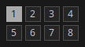

In Giada, channels and scenes work closely together. A scene defines the content of your channels: actions for MIDI and sample channels, and samples for sample channels. For example, a sample channel might contain a.wav in scene #1 and b.wav in scene #2. Likewise, a MIDI channel might play certain notes in scene #1 and remain silent in scene #2.
You can have up to 8 scenes, and scene #1 is the default one. Scenes add variety and flexibility to your live performances. By using multiple scenes, you can build more complex songs made up of different parts, such as an intro in scene #1 and a chorus in scene #2. More specifically, switching scenes can affect:
Switching between scenes also updates the Action Editor and the Sample Editor so that they reflect the content of the current scene and let you edit it more easily.
Scenes are connected to the main sequencer, and the way you switch scenes depends on the sequencer's status. When the main transport is stopped, you can switch scenes immediately by clicking the corresponding scene button. When the sequencer is running, the scene you select becomes the upcoming scene, and its button starts blinking. The sequencer then switches to the requested scene automatically on the next first beat. If needed, you can force an immediate scene change by clicking the scene button while holding shift.